Bienvenue
Un graphique de dispersion (ou nuage de points - appelé scatterplot en anglais) affiche la relation entre deux variables continues. Les graphiques de dispersion sont l’un des types de graphiques les plus courants —en fait, vous avez déjà rencontré des graphiques de dispersion dans le module Bases de la visualisation de données.
Dans ce module, vous apprendrez comment :
- Créer de nouveaux types de graphiques de dispersion avec
geom_text()etgeom_jitter() - Ajouter plusieurs couches graphiques
- Améliorer les graphiques de dispersion avec
geom_smooth(),geom_rug(), etgeom_repel() - Changer le système de coordonnées d’un graphique
Le module est adapté du livre R for Data Science de Hadley Wickham et Garrett Grolemund, publié par O’Reilly Media, Inc. 2016, ISBN : 9781491910399. Vous pouvez acheter le livre sur shop.oreilly.com.
Le module utilise les packages {ggplot2}, {ggrepel} et {dplyr}, qui ont été préchargés pour votre confort.
Graphiques de dispersion
Révision - geom_point()
Dans le module Bases de la visualisation de données, vous avez appris à faire un graphique de dispersion avec geom_point().
Le code ci-dessous résume le jeu de données mpg et commence à tracer les résultats. Terminez le tracé avec geom_point(). Mettez mean_cty sur l’axe \(x\) et mean_hwy sur l’axe \(y\).
mpg %>%
group_by(class) %>%
summarise(mean_cty = mean(cty), mean_hwy = mean(hwy)) %>%
ggplot()mpg %>%
group_by(class) %>%
summarise(mean_cty = mean(cty), mean_hwy = mean(hwy)) %>%
ggplot() +
aes(x = mean_cty, y = mean_hwy) +
geom_point()"Bon travail ! Il peut être difficile de se rappeler quand il faut utiliser %>% et quand il faut utiliser +. Utilisez %>% pour ajouter une étape complète à un flux de code (pipe). Utilisez + pour ajouter une ligne de plus à un appel {ggplot2}."geom_text()
geom_text() et geom_label() créent des graphiques de dispersion qui utilisent des mots au lieu de points pour afficher les données. Chacun d’entre eux nécessite un paramètre esthétique supplémentaire : l’étiquette (label), que vous devez associer à une variable contenant du texte à afficher pour chaque observation.
Convertissez le graphique ci-dessous de geom_point() à geom_text() et utilisez pour le paramètre label la variable class. Lorsque vous avez terminé, convertissez le code en geom_label() et relancez le graphique. Repérez-vous la différence ?
mpg %>%
group_by(class) %>%
summarise(mean_cty = mean(cty), mean_hwy = mean(hwy)) %>%
ggplot() +
aes(x = mean_cty, y = mean_hwy) +
geom_point()mpg %>%
group_by(class) %>%
summarise(mean_cty = mean(cty), mean_hwy = mean(hwy)) %>%
ggplot() +
aes(x = mean_cty, y = mean_hwy, label = class) +
geom_text()
mpg %>%
group_by(class) %>%
summarise(mean_cty = mean(cty), mean_hwy = mean(hwy)) %>%
ggplot() +
aes(x = mean_cty, y = mean_hwy, label = class) +
geom_label()"Voilà ! geom_text() remplace chaque point par un morceau de texte fourni via le paramètre esthétique `label`. geom_label() remplace chaque point par une zone de texte. Remarquez que certains morceaux de texte se chevauchent, et que d'autres sortent de la page. Nous allons bientôt chercher un moyen de régler ce problème."geom_smooth()
Dans le module Bases de la visualisation de données, vous avez rencontré geom_smooth(), qui fournit une version synthétisées d’un graphique de dispersion.
geom_smooth() utilise un modèle pour ajuster une ligne lissée aux données, puis affiche les résultats. Par défaut, geom_smooth() ajuste une fonction de lissage ‘loess’ aux jeux de données de moins de 1 000 observations, et un modèle additif généralisé aux jeux de données de plus de 1 000 observations.
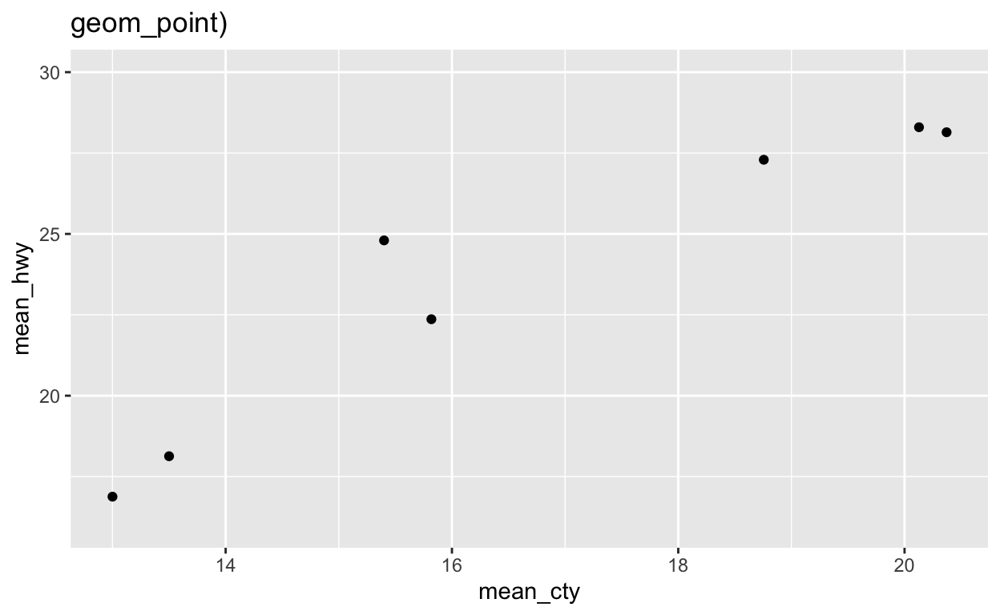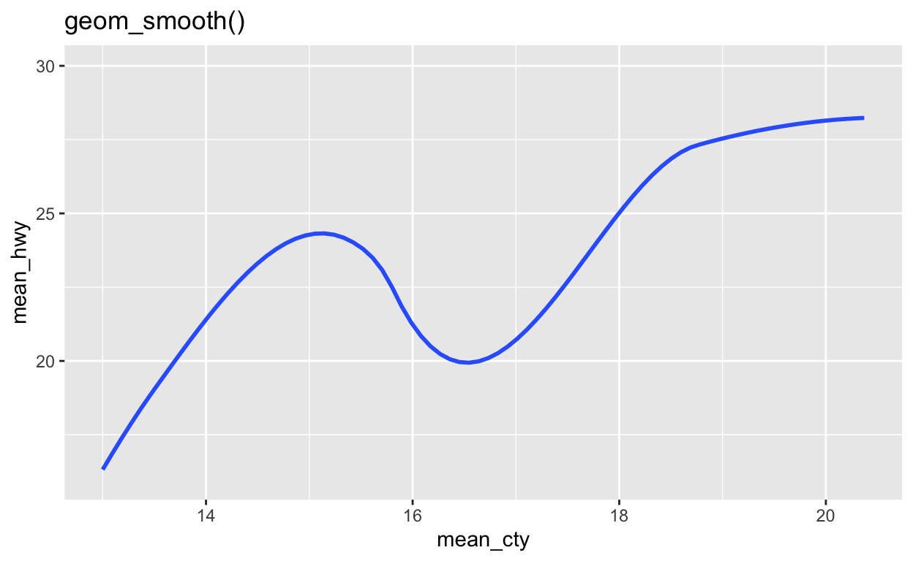
method
Vous pouvez utiliser le paramètre method de geom_smooth() pour ajuster et afficher des lignes de lissage provenant d’autres types de modèles de régression. Pour ce faire, passez à method le nom d’une fonction de modélisation à utiliser par geom_smooth(), comme lm (pour les modèles linéaires) ou glm (pour les modèles linéaires généralisés).
Dans le code ci-dessous, utilisez geom_smooth() pour dessiner la ligne du modèle linéaire qui correspond aux données.
mpg %>%
group_by(class) %>%
summarise(mean_cty = mean(cty), mean_hwy = mean(hwy)) %>%
ggplot() mpg %>%
group_by(class) %>%
summarise(mean_cty = mean(cty), mean_hwy = mean(hwy)) %>%
ggplot() +
aes(x = mean_cty, y = mean_hwy) +
geom_smooth(method = lm)"Bon travail ! Voyons maintenant comment rendre geom_smooth() beaucoup plus utile."Couches graphiques (layers)
Ajouter une couche
geom_smooth() devient beaucoup plus utile quand vous le combinez avec geom_point() pour créer un graphique de dispersion qui contient les deux éléments :
- les données brutes
- une ligne de tendance
Dans {ggplot2}, vous pouvez ajouter plusieurs geoms à un graphique en ajoutant plusieurs fonctions géométriques geom_à l’appel du graphique. Par exemple, le code ci-dessous crée un tracé qui contient à la fois des points et une ligne de lissage. Imaginez à quoi ressembleront les résultats dans votre tête, puis lancez le code pour voir si vous avez raison.
mpg %>%
group_by(class) %>%
summarise(mean_cty = mean(cty), mean_hwy = mean(hwy)) %>%
ggplot() +
aes(x = mean_cty, y = mean_hwy) +
geom_point() +
geom_smooth(method = lm) "Bon travail ! Vous pouvez ajouter autant de fonctions géométriques que vous le souhaitez à un graphique. Cependant, en pratique, un graphique deviendra difficile à interpréter si il contient plus de deux ou trois fonctions géométriques"geom_label_repel()
Vous souvenez-vous de la façon dont les étiquettes que nous avons fabriquées au début se chevauchaient et s’écartaient de notre graphique ? La fonction géométrique geom_label_repel() du package {ggrepel} atténue ces problèmes en utilisant un algorithme pour disposer les étiquettes dans un graphique. Il fonctionne mieux en conjonction avec une couche de points qui affiche l’emplacement réel de chaque observation.
Utilisez geom_label_repel() pour ajouter une nouvelle couche au graphique ci-dessous. geom_label_repel() requiert les même paramètres esthétique que geom_label() : x, y, et label (ici fixé à class).
mpg %>%
group_by(class) %>%
summarise(mean_cty = mean(cty), mean_hwy = mean(hwy)) %>%
ggplot() +
aes(x = mean_cty, y = mean_hwy) +
geom_point() +
geom_smooth(method = lm)mpg %>%
group_by(class) %>%
summarise(mean_cty = mean(cty), mean_hwy = mean(hwy)) %>%
ggplot() +
aes(x = mean_cty, y = mean_hwy) +
geom_point() +
geom_smooth(method = lm) +
geom_label_repel(aes(label = class))"Bien ! Le package {ggrepel} fournit la fonction geom_text_repel(), qui est analogue à geom_text()."Duplication de code
Une autre manière de créer le graphique précédent aurait été d’utiliser le code suivant :
mpg %>%
group_by(class) %>%
summarise(mean_cty = mean(cty), mean_hwy = mean(hwy)) %>%
ggplot() +
geom_point(mapping = aes(x = mean_cty, y = mean_hwy)) +
geom_smooth(mapping = aes(x = mean_cty, y = mean_hwy), method = lm) +
geom_label_repel(mapping = aes(x = mean_cty, y = mean_hwy, label = class))Si vous étudiez ce code, vous constaterez un certain nombre de duplications. Il utilise les mêmes paramètres esthétiques à trois endroits différents.
Vous devez essayer d’éviter les doublons chaque fois que vous le pouvez dans le code, car le code en double invite aux fautes de frappe, est difficile à mettre à jour et prend plus de temps que nécessaire à écrire. C’est pourquoi nous préférons utiliser le code suivant :
mpg %>%
group_by(class) %>%
summarise(mean_cty = mean(cty), mean_hwy = mean(hwy)) %>%
ggplot() +
aes(x = mean_cty, y = mean_hwy) +
geom_point() +
geom_smooth(method = lm) +
geom_label_repel(aes(label = class))Paramètres esthétiques de ggplot()
Vous pouvez fixer les paramètres esthétiques à deux endroits dans n’importe quel appel {ggplot2}. Vous pouvez définir les paramètres esthétiques à l’intérieur d’une fonction geom. Ou vous pouvez les placer à l’extérieur des fonctions geom, juste après l’appel à la fonction ggplot(). C’est cette dernière solution qui permet d’éviter les doublons de code, et donc celle que nous préconisons. Au-delà de limiter les duplications de code, cette solution permet également d’identifier très rapidement quels sont les paramètres esthétiques utilisés pour construire le graphique.
ggplot(data = mpg) +
aes(x = displ, y = hwy) +
geom_point()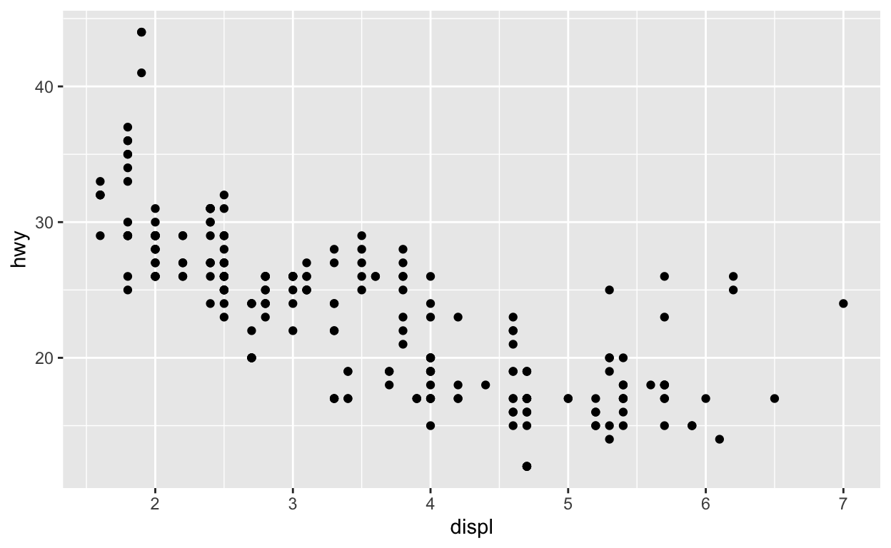
Paramètres esthétiques globaux vs. locaux
{ggplot2} traitera tous les paramètres esthétiques définis dans la fonction aes() utilisée à l’extérieur des fonction geom_ comme des paramètres globaux. Chaque couche du graphique héritera et utilisera ces paramètres.
{ggplot2} traitera tous les paramètres esthétiques définis dans une fonction geom_() comme des paramètres locaux. Seule la couche locale utilisera ces paramètres. Les paramètres locaux remplaceront les paramètres globaux si les deux s’opposent, ou les compléteront s’ils ne s’opposent pas.
Ce système crée un moyen efficace d’écrire des appels de graphiques :
ggplot(data = mpg) +
aes(x = displ, y = hwy) +
geom_point() +
geom_smooth(aes(color = class), se = FALSE)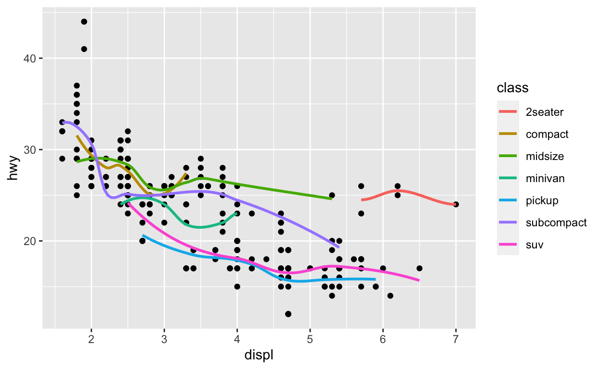
Exercice 2
Réduisez les doublons dans le code ci-dessous en déplaçant autant de paramètres esthétiques locaux que possible dans les paramètres globaux. Relancez le nouveau code pour vous assurer qu’il crée le même graphique.
mpg %>%
group_by(class) %>%
summarise(mean_cty = mean(cty), mean_hwy = mean(hwy)) %>%
ggplot() +
geom_point(mapping = aes(x = mean_cty, y = mean_hwy)) +
geom_smooth(mapping = aes(x = mean_cty, y = mean_hwy), method = lm) +
geom_label_repel(mapping = aes(x = mean_cty, y = mean_hwy, label = class))`geom_smooth()` using formula 'y ~ x'mpg %>%
group_by(class) %>%
summarise(mean_cty = mean(cty), mean_hwy = mean(hwy)) %>%
ggplot() +
aes(x = mean_cty, y = mean_hwy) +
geom_point() +
geom_smooth(method = lm) +
geom_label_repel(aes(label = class))"Bon travail ! N'oubliez pas que tout paramètre esthétique ne doit pas nécessairement être global. Ici, seul geom_label_repel utilise le paramètre esthétique `label`. Ce paramètre doit donc rester local pour éviter les effets secondaires involontaires, les avertissements ou les erreurs."Exercice 3 - Global vs. local
Recréez le graphique ci-dessous de la manière la plus efficace possible.
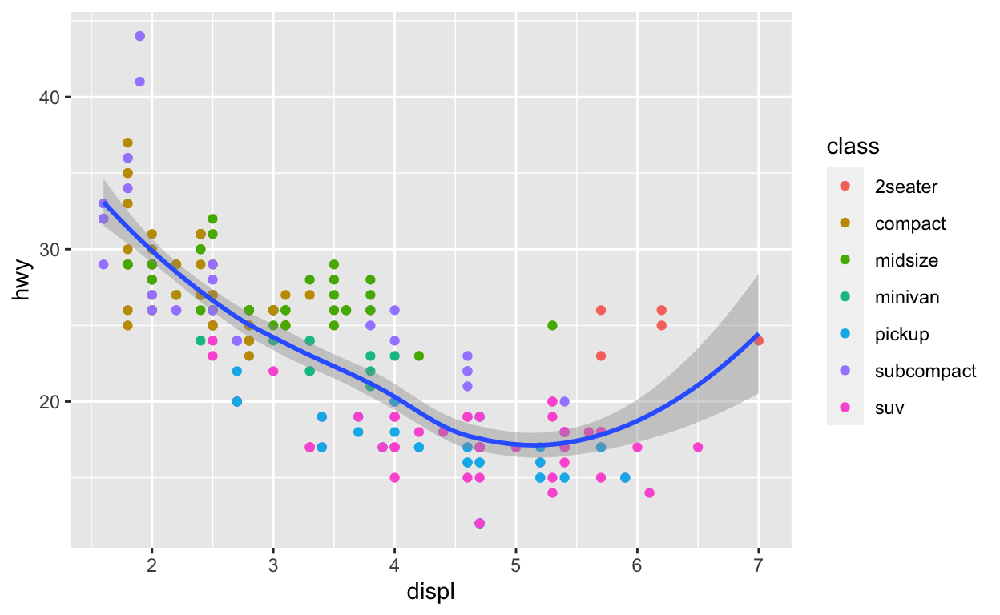
ggplot(data = mpg) +
aes(x = displ, y = hwy) +
geom_point(aes(color = class)) +
geom_smooth()"Bien joué !"data global vs. local
Le paramètre data suit également un système global/local. Si vous définissez l’argument data d’une fonction geom, la fonction geom utilisera les données que vous fournissez au lieu des données contenues dans ggplot(). C’est un moyen pratique de mettre en évidence des groupes de points.
Utilisez les arguments data pour recréer le tracé ci-dessous. Nous avons commencé le code pour vous.
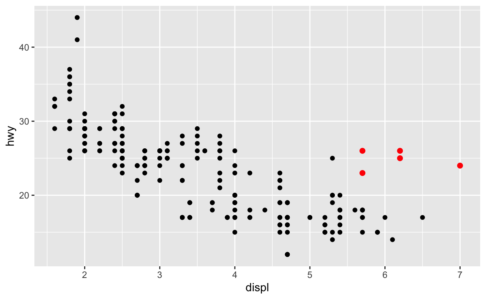
mpg2 <- filter(mpg, class == "2seater")mpg2 <- filter(mpg, class == "2seater")
ggplot(data = mpg) +
aes(x = displ, y = hwy) +
geom_point() +
geom_point(data = mpg2, color = "red", size = 2)"Excellent travail"Exercice 4 - data global vs. local
Utilisez les paramètres data pour re-créer le graphique ci-dessous.
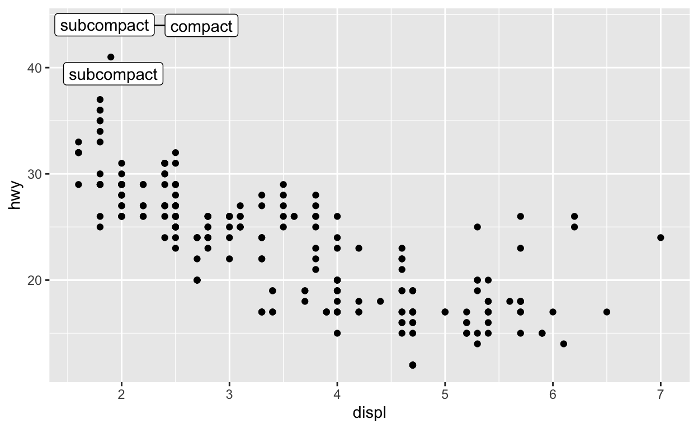
mpg3 <- filter(mpg, hwy > 40)
ggplot(data = mpg) +
aes(x = displ, y = hwy) +
geom_point() +
geom_label_repel(data = mpg3, aes(label = class))"Bien joué !"Sauvegarder des graphiques
Lorsque vous explorez des données, il vous arrive souvent de faire un graphique et de réfléchir à un moyen de l’améliorer. Au lieu de repartir de zéro ou de copier-coller votre code, vous pouvez stocker votre graphique {ggplot2} dans un objet R. Plus tard, vous pourrez afficher le graphique ou y ajouter des éléments.
p <- ggplot(data = mpg) +
aes(x = displ, y = hwy) +
geom_point()
p +
geom_smooth()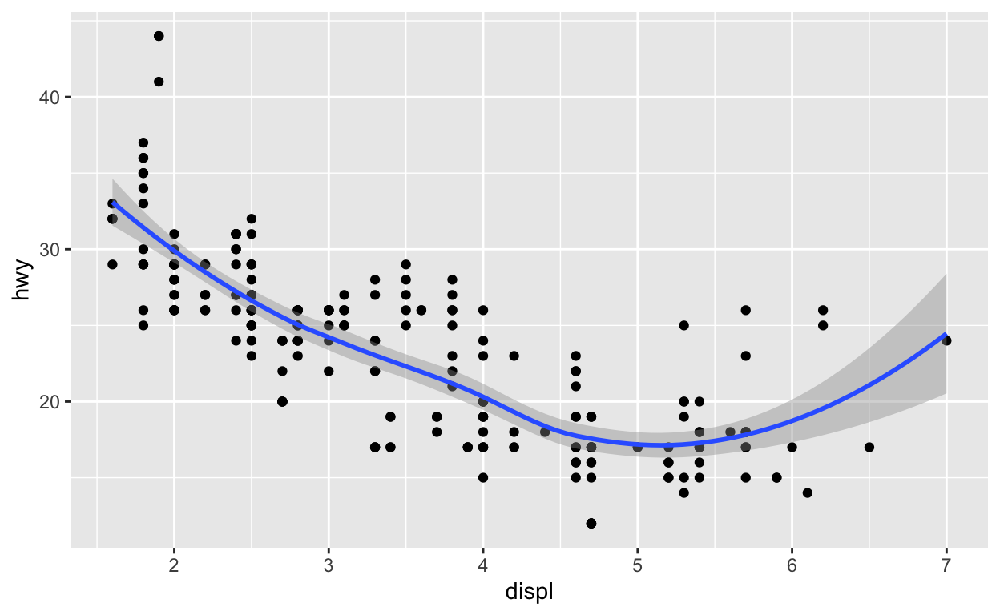
p +
geom_smooth(method = lm, color = "purple")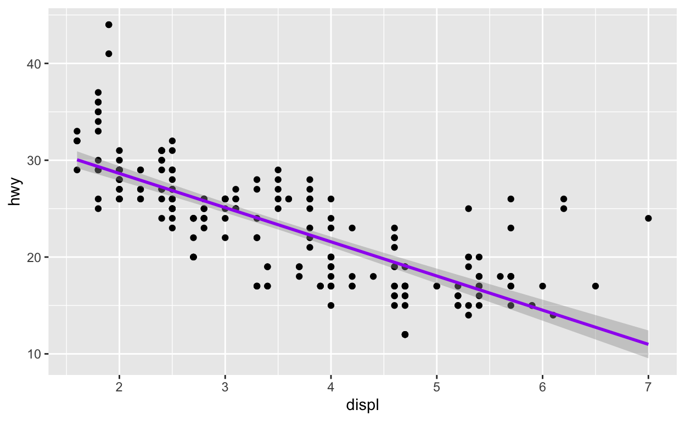
Si vous souhaitez conserver une nouvelle version du graphique, il vous faudra écraser la version précédente. Comme ceci :
p <- p +
geom_smooth(method = lm, color = "purple")Notez que {ggplot2} n’affiche pas le graphique lorsque vous le stockez. Il attend que vous appeliez l’objet stocké.
p
geom_rug()
geom_rug() ajoute un autre type de résumé à un graphique. Il utilise les affichages des distributions marginales unidimensionnelles de chaque variable du graphique de dispersion. Celles-ci apparaissent sous forme de traits le long des axes \(x\) et \(y\).
Dans la partie ci-dessous, utilisez le jeu de données faithful pour créer un graphique de dispersion qui comporte la variable waiting sur l’axe \(x\) et la variable eruptions sur l’axe \(y\). Utilisez la fonction geom_rug() pour ajouter au graphique de dispersion les données sur l’axe des \(x\) et des \(y\) sous forme de petits traits. Comme geom_point(), geom_rug() nécessite les paramètres esthétiques x et y.
ggplot(data = faithful) +
aes(x = waiting, y = eruptions) +
geom_point() +
geom_rug()'Bon travail ! Passez à geom_rug() le paramètre `sides = "l"` pour limiter le tracé des traits à $y$ ou `sides = "b"` pour limiter le tracé à $x$.'geom_jitter()
geom_jitter() trace un graphique de dispersion et ajoute ensuite une petite quantité de bruit aléatoire à chaque point du tracé. C’est un raccourci pour ajouter un ajustement de position “bruité” à un graphique de dispersion (c’est-à-dire, geom_point(position = "jitter")).
Pourquoi utiliser geom_jitter() ? Le bruit fournit un moyen d’inspecter des motifs qui se produisent dans des données fortement maillées ou se chevauchant. Pour voir ce que nous voulons dire, remplacez geom_point() par geom_jitter() dans le graphique ci-dessous.
ggplot(data = mpg) +
aes(x = class, y = hwy) +
geom_point()ggplot(data = mpg) +
aes(x = class, y = hwy) +
geom_jitter()"Bon travail ! Vous pouvez aussi ajouter du bruit dans une seule direction. Pour désactiver le bruit dans la direction x, définissez width = 0 dans geom_jitter(). Pour désactiver le bruit dans la direction y, définissez height = 0." jitter et boîtes à moustaches
geom_jitter() fournit un moyen pratique de superposer des données brutes sur des boîtes à moustaches, qui affichent des informations synthétiques.
Utilisez le bloc de code ci-dessous pour créer une boîte à moustaches à partir du graphique précédent. Faites en sorte que les valeurs aberrantes (outliers) aient un alpha fixé à 0, ce qui les rendra complètement transparentes. Ajoutez ensuite une couche de points qui sont bruités dans la direction \(y\), mais pas dans la direction \(x\).
ggplot(data = mpg) +
aes(x = class, y = hwy) +
geom_boxplot(outlier.alpha = 0) +
geom_jitter(width = 0)"Bon travail ! Si vous le souhaitez, vous pouvez rendre les boîtes à moustaches plus visibles en réglant le paramètre alpha de geom_jitter() sur un nombre faible, par exemple geom_jitter(aes(x = classe, y = hwy), width = 0, alpha = 0.5)."Systemes de coordonnees
coord_flip()
Une manière de personnaliser un graphique de dispersion est de le tracer dans un nouveau système de coordonnées. {ggplot2} propose plusieurs fonctions d’aide qui modifient le système de coordonnées d’un graphique. Vous avez déjà vu l’une d’entre elles en action dans le module Boîtes à moustaches : coord_flip(). Cette fonction inverse les axes \(x\) et \(y\) d’un graphique.
ggplot(data = mpg) +
aes(x = class, y = hwy) +
geom_boxplot(outlier.alpha = 0) +
geom_jitter(width = 0) +
coord_flip()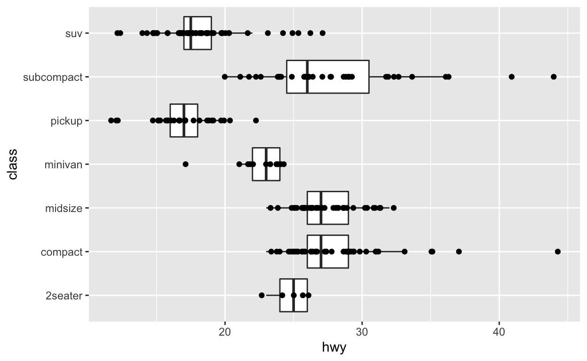
Les fonctions coord
Au total, {ggplot2} est doté de sept fonctions de coordonnées :
coord_cartesian()- (par défaut) coordonnées cartésiennescoord_fixed()- coordonnées cartésiennes qui maintiennent un rapport d’aspect fixe lorsque la fenêtre du graphique est redimensionnéecoord_flip()- coordonnées cartésiennes avec les axes x et y inverséscoord_map()etcoord_quickmap()- projections cartographiques pour le tracé de cartescoord_polar()- coordonnées polairescoord_trans()- coordonnées cartésiennes transformées
Par défaut, {ggplot2} dessine un graphique en utilisant des coordonnées cartésiennes, sauf si vous ajoutez une des fonctions ci-dessus au code.
coord_polar()
Vous utilisez chaque fonction coord comme vous utilisez coord_flip(), en l’ajoutant à un appel {ggplot2}.
Ainsi, par exemple, vous pouvez ajouter coord_polar() pour construire un graphique qui utilise des coordonnées polaires.
p2 <- ggplot(data = diamonds) +
aes(x = cut, fill = cut) +
geom_bar(width = 1)
p2 +
coord_polar()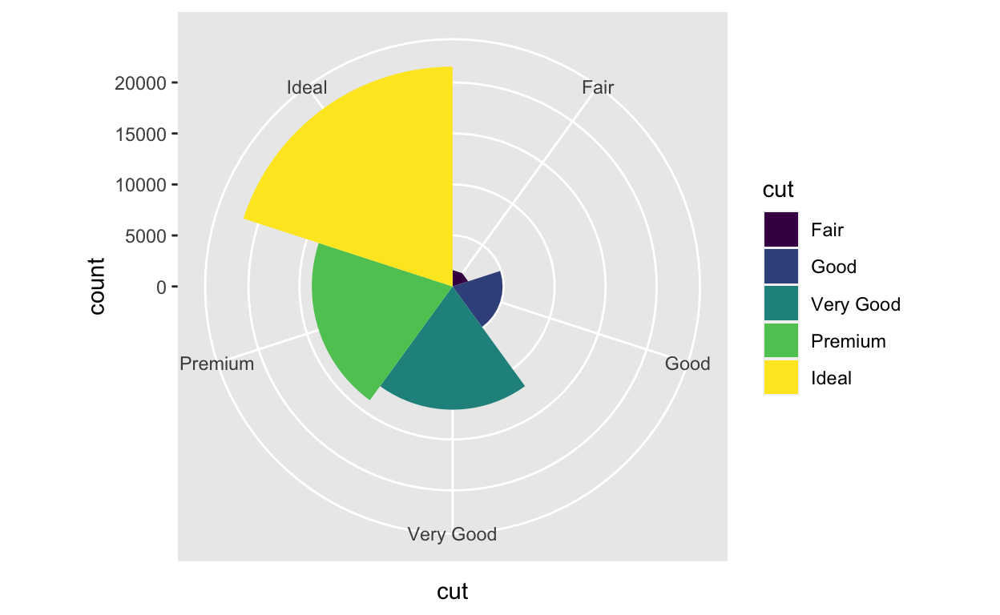
Systèmes de coordonnées et graphiques de dispersion
Comment un système de coordonnées peut-il améliorer un nuage de points ?
Considérez le graphique ci-dessous. Il montre une relation étroite entre la taille en carats d’un diamant et son prix.
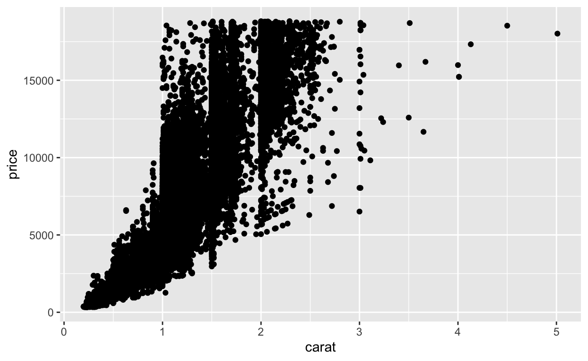
Cependant, la relation n’apparaît pas linéaire. Elle semble avoir la forme \(y = x^{n}\), une relation commune que l’on trouve dans la nature. Vous pouvez estimer les \(n\) en reportant les données dans un graphique log-log.
Graphiques log-log
Les graphiques log-log représentent le logarithme de \(x\) par rapport au logarithme de \(y\), ce qui a un effet visuel précieux. Si vous enregistrez les deux côtés d’une relation comme
\[y = x^{n}\]
Vous obtenez une relation linéaire avec une pente \(n\) :
\[log(y) = log(x^{n})\] \[log(y) = n \cdot log(x)\] En d’autres termes, le log-log distord des relations non-linéaires en lignes droites. En outre, ils affichent \(n\) comme pente de la ligne droite, ce qui est raisonnablement facile à estimer.
Essayez ceci en utilisant le jeu de données diamonds pour tracer log(carat) contre log(prix).
ggplot(data = diamonds) +
aes(x = log(carat), y = log(price)) +
geom_point() "Bon travail ! Voyons maintenant comment vous pouvez faire la même transformation, et d'autres aussi avec une fonction de coordination."coord_trans()
coord_trans() fournit une seconde façon de faire la même transformation, ou des transformations similaires.
Pour utiliser coord_trans() donnez-lui un argument \(x\) et/ou \(y\). Donnez à chacun le nom d’une fonction R entouré de guillemets. coord_trans() utilisera la fonction pour transformer l’axe spécifié avant de tracer les données brutes.
ggplot(data = diamonds) +
aes(x = carat, y = price) +
geom_point() +
coord_trans(x = "log", y = "log")Récapitulatif
Les graphiques de dispersion sont l’un des types de graphiques les plus utiles pour la Data science. Vous aurez de nombreuses occasions d’utiliser geom_point(), geom_smooth(), et geom_label_repel() dans votre travail quotidien.
Cependant, ce module a introduit deux concepts importants qui ne s’appliquent pas seulement aux nuages de points :
- Vous pouvez ajouter de multiples couches à n’importe quel graphique que vous construisez avec {ggplot2}
- Vous pouvez ajouter un système de coordonnées différent à tout graphique que vous construisez avec {ggplot2}